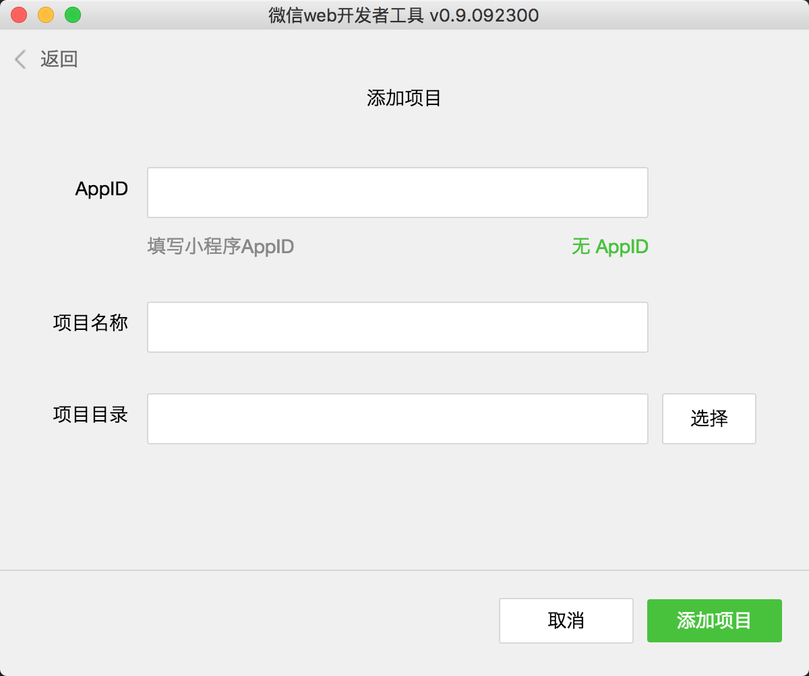
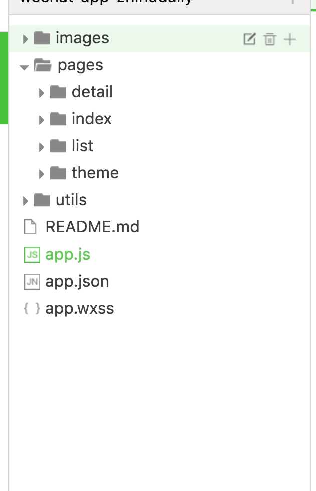

上周被 小程序 刷了屏，吓得我周末赶紧撸了个 小程序 版的 知乎日报 压压惊, 总结一下这个开发体验，和踩过的坑。
先上图

开发环境准备
小程序 出来第二天就被破解，第三天微信就把开发工具开发下载了， 现在只需要下载 微信开发者工具 就可以使用了，

创建项目的时候，要选择无 appid, 这样就不会有 appid 的验证了。
目录结构

- app.js 注册app逻辑， app.wxss 全局样式文件 app.json 配置信息
- pages 存放页面文件
- utils 工具类代码
- images 图片资源文件
小程序中每一个页面都会有三个文件 .wxml .wxss .js ，对应着结构、样式、和逻辑，相当于网页中的 html css 和 js 的关系。
开发第一个页面
代码来自新建项目
1 | <!--index.wxml--> |
1 | /**index.wxss**/ |
1 | //index.js |
新建的项目中，index 下都会看到这些代码，接下来分别介绍 wxml wxss js
wxml
这个是页面结构的描述文件, 主要用于以下内容
- 用标签形式指定组件使用
<view></view> - 使用
wx:forwx:if等指令完成一些模板上的逻辑处理 - 使用
bind*绑定事件
wxss
样式文件，和 css 语法基本一致，不过支持的选择器语法有限 看这里， 可以使用 flexbox 完成布局。
内部也可以使用 import 命令引入外部样式文件
1 | @import "common.wxss"; |
js
页面逻辑控制， 遵循 commonJs 规范
1 | // util.js |
1 | var utils = require('../../utils/util.js') |
这里的js 并不是在 浏览器环境下运行， 所以 window.* 这一类的代码都会报错， dom 操作也是不被允许的，官方目前好像是不能支持其他的 js 库运行，全封闭式，这个以后应该会逐渐完善。
页面上使用 Page 方法来注册一个页面
1 | Page({ |
当我们需要改变 绑定的数据时，必须调用 setData 方法修改，才会触发页面更新，像这样：
1 | Page({ |
条件渲染和列表渲染
以下内容来自微信官方文档。
小程序使用 wx:if="" 完成条件渲染，类似于 vue 的 v-if
1 | <view wx:if="{{condition}}"> True </view> |
也可以用 wx:elif 和 wx:else 来添加一个 else 块：
1 | <view wx:if="{{length > 5}}"> 1 </view> |
wx:for 控制属性绑定一个数组，即可使用数组中各项的数据重复渲染该组件。
内置变量 index （数组遍历的下标）， item （数组遍历的每一项）
1 | <view wx:for="{{items}}"> |
1 | Page({ |
使用wx:for-item可以指定数组当前元素的变量名
使用wx:for-index可以指定数组当前下标的变量名：
1 | <view wx:for="{{array}}" wx:for-index="idx" wx:for-item="itemName"> |
事件绑定
wxml 只是用 bind[eventName]="handler" 语法绑定事件
1 | <view bindtap="bindViewTap" class="userinfo"><text>tap</text></view> |
1 | Page({ |
通过 data-* 和 e.target.dateset 传递参数
1 | <view bindtap="bindViewTap" data-test-msg="啦啦啦啦啦啦" class="userinfo"><text>tap</text></view> |
1 | Page({ |
目前踩过的坑
事件绑定中 e.target.dataset
当在父组件绑定事件和参数，点击时又子组件冒泡事件到父组件，这个时候 e.target.dataset 为空
1 | <view bindtap="bindViewTap" data-test-msg="啦啦啦啦啦啦" class="userinfo"> |
1 | Page({ |
在线图片加载不稳定
在知乎日报这个项目上有大量图片需要从网上下载，这里 image 组件额显示显得极其不稳定，有很多的图片都显示不出来.
最后
微信小程序现在还在内测阶段，有很多的问题需要完善，不过对于开发速度和体验来说还是不错的，期待正式发布的那一天。